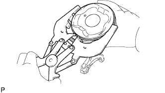
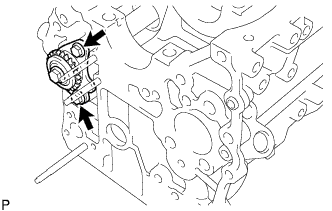
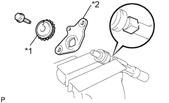

БЛОК ЦИЛИНДРОВ > РАЗБОРКА |
| 1. ПРОВЕРЬТЕ ОСЕВОЙ ЗАЗОР ШАТУНА |
С помощью индикатора часового типа измерьте осевой зазор при движении шатуна назад и вперед.
| 2. ПРОВЕРЬТЕ МАСЛЯНЫЙ ЗАЗОР ШАТУНА |
Убедитесь в том, что установочные метки шатуна и крышки совмещены. Это обеспечит правильность повторной сборки.
Выверните 2 болта крышки шатуна.
Используя 2 снятых болта крышки шатуна, снимите крышку шатуна и нижний подшипник, покачивая крышку шатуна вправо и влево.
Очистите штифт и подшипник коленчатого вала.
Убедитесь в отсутствии на штифте коленчатого вала и подшипнике коленчатого вала следов точечной коррозии и царапин.
Поместите на шатунную шейку полоску сминаемого пластичного калибра (Plastigage).
| *1 | Сминаемый пластичный калибр Plastigage |
 |
Убедитесь, что метка внешней стороны на крышке шатуна обращена вперед.
| *1 | Метка передней стороны |
Установите крышку шатуна (Нажмите здесь).
 |
Выверните 2 болта и снимите крышку шатуна (см. операции выше).
Измерьте ширину сминаемого пластичного калибра Plastigage в самой широкой точке.
| *1 | Сминаемый пластичный калибр Plastigage |
| *2 | Метка 4, 5 или 6 |
| Наименование | Заданные условия |
| Метка 4 | 1,484 - 1,487 мм (0,05843 - 0,05854 дюйма) |
| Метка 5 | 1,488 - 1,490 мм (0,05858 - 0,05866 дюйма) |
| Метка 6 | 1,491 - 1,493 мм (0,05870 - 0,05878 дюйма) |
Полностью удалите сминаемый пластичный калибр (Plastigage).
Выполните описанную выше проверку для каждой шатунной шейки.
| 3. СНИМИТЕ ПОРШЕНЬ С ШАТУНОМ В СБОРЕ |
 |
С помощью инструмента для снятия уступа полностью снимите нагар с верхней части цилиндра.
| *1 | Инструмент для снятия уступа |
Вставьте поршень, шатун в сборе и верхний подшипник в верхнюю часть блока цилиндров.
| 4. СНИМИТЕ ПОДШИПНИК ШАТУНА |
Снимите подшипники шатунов с шатунов и крышек шатунов.
| 5. ПРОВЕРЬТЕ ОСЕВОЙ ЗАЗОР КОЛЕНЧАТОГО ВАЛА |
С помощью индикатора часового типа измерьте осевой зазор, двигая коленчатый вал вперед и назад с помощью отвертки.
| 6. СНИМИТЕ КОЛЕНЧАТЫЙ ВАЛ |
В несколько приемов равномерно ослабьте 10 болтов крышек подшипников в последовательности, показанной на рисунке.
Поднимите коленчатый вал, чтобы снять его.
Снимите верхние упорные шайбы с блока цилиндров.
| 7. СНИМИТЕ ПОДШИПНИК КОЛЕНЧАТОГО ВАЛА |
Снимите подшипники коленчатого вала с крышек подшипников и блока цилиндров.
| 8. СНИМИТЕ НАБОР ПОРШНЕВЫХ КОЛЕЦ |
|  |
С помощью съемника поршневых колец снимите 2 компрессионных кольца.
С помощью съемника поршневых колец снимите направляющую маслосъемного кольца.
Снимите рукой расширитель маслосъемного кольца.
| 9. СНИМИТЕ ПОРШЕНЬ С ПАЛЬЦЕМ В СБОРЕ |
Проверьте условия посадки поршня на поршневой палец.
Подвигайте поршень вперед и назад по поршневому пальцу.
Если при движении ощущается сопротивление, замените поршень и палец в сборе.
Отсоедините шатун от поршня.
С помощью отвертки отделите пружинные стопорные кольца с поршня.
| *1 | Пружинное стопорное кольцо |
Постепенно нагрейте поршень до температуры примерно 80-90°C (176-194°F).
С помощью пластмассового молотка и латунного стержня осторожно выбейте поршневой палец и снимите шатун.
| 10. ОЧИСТИТЕ ПОРШЕНЬ С ПАЛЬЦЕМ В СБОРЕ |
Скребком для удаления остатков прокладок снимите нагар с верхней части поршня.
С помощью инструмента для очистки канавок или сломанного кольца очистите поршневые канавки.
Используя растворитель и щетку, тщательно очистите поршень.
| 11. СНИМИТЕ ШТУЦЕР ПОДАЧИ МАСЛА № 1 |
 |
С помощью шестигранного гаечного ключа на 5 мм снимите штуцеры подачи масла.
| 12. ПРОВЕРЬТЕ ОСЕВОЙ ЗАЗОР УРАВНОВЕШИВАЮЩЕГО ВАЛА |
Смещая уравновешивающий вал вперед и назад, измерьте осевой зазор с помощью индикатора часового типа.
| 13. СНИМИТЕ УРАВНОВЕШИВАЮЩИЙ ВАЛ № 1 |
 |
Выверните болт.
 |
Снимите уравновешивающий вал с блока цилиндров.
| 14. СНИМИТЕ ВЕДОМУЮ ШЕСТЕРНЮ УРАВНОВЕШИВАЮЩЕГО ВАЛА № 1 |
 |
Зажмите головку уравновешивающего вала в тисках.
Выверните болт.
Снимите ведомую шестерню уравновешивающего вала № 1, сдвижную шпонку, упорную шайбу уравновешивающего вала и распорную втулку уравновешивающего вала.
| *1 | Ведомая шестерня уравновешивающего вала № 1 |
| *2 | Сдвижная шпонка |
| *3 | Упорная шайба уравновешивающего вала |
| *4 | Распорная втулка уравновешивающего вала |
| 15. СНИМИТЕ УРАВНОВЕШИВАЮЩИЙ ВАЛ № 2 |
|  |
Выверните 2 болта.
 |
Снимите уравновешивающий вал с блока цилиндров.
| 16. СНИМИТЕ ВЕДОМУЮ ШЕСТЕРНЮ УРАВНОВЕШИВАЮЩЕГО ВАЛА № 2 |
|  |
Зажмите головку уравновешивающего вала в тисках.
Выверните болт.
Снимите ведомую шестерню уравновешивающего вала № 2 и упорную шайбу уравновешивающего вала № 2.
| *1 | Ведомая шестерня уравновешивающего вала № 2 |
| *2 | Упорная шайба уравновешивающего вала № 2 |
| 17. СНИМИТЕ КРАН ДЛЯ СЛИВА ОХЛАЖДАЮЩЕЙ ЖИДКОСТИ ИЗ БЛОКА ЦИЛИНДРОВ |
Снимите кран для слива охлаждающей жидкости из блока цилиндров.
Снимите пробку с крана для слива охлаждающей жидкости.
| 18. СНИМИТЕ РЕЗЬБОВУЮ ШПИЛЬКУ |